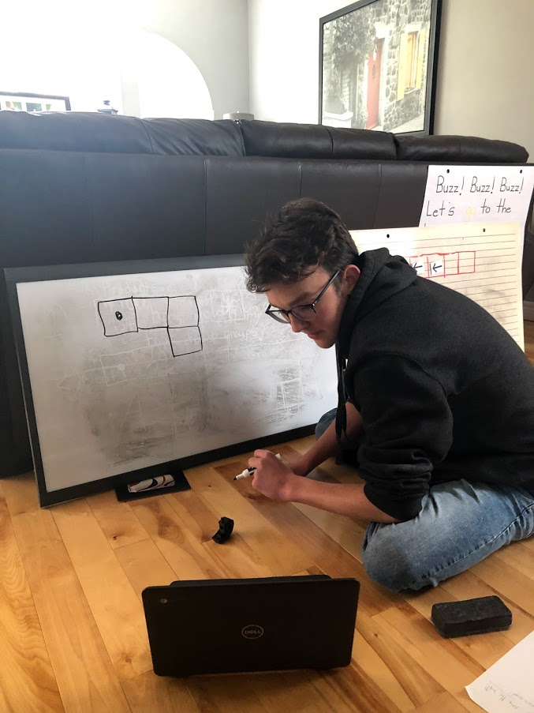

Kindergarteners!
May 7, 2021
I recently worked with kindergarteners to teach the basics of computers and coding, and it was an absolute blast! We learned about logic and control structures in the form of a game. I used a lot of things that I learned when inteviewing Jahangir Abdullayev, as he has had a lot of experience working with kids and being involved in teaching them about technology.
This was a great oppertunity given to me by a kindergarten class in the region, and we spend about two hours talking and learning. To start, we went through a lot of little bits about computers and how they work, and then we looked at using block coding to teach a boat how to move through a maze, which was a really fun way to get them interested and involved. They had a lot of fun with it so we did it for a while, and then at the end we talked about
Scratch, the block coding language.
They seemed really interested and wanted to get started and keep going on their own time.
I was a bit skeptical of how I would connect with them through the online format, but as we got underway it went quite smoothly. I had some issues with positioning the camera to show them everything that they wanted to see, but it was a lot better than I expected.
I ended up getting it all set up in my living room :)
